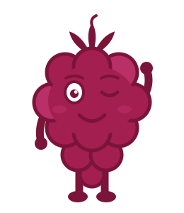
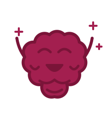
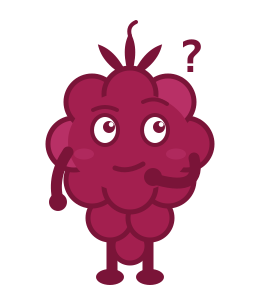
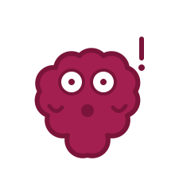
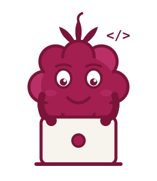
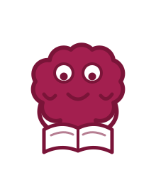
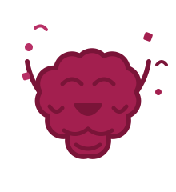
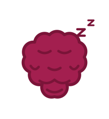
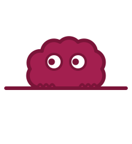

Maskot webu katerinamlsnova.cz — malina, která se odmítla nechat sníst a místo toho se naučila kódovat.
Malina se objevila jednou v noci v misce vedle rozepsané korektury. Všechny ostatní maliny z misky postupně zmizely — redaktorská práce je náročná na svačiny. Tahle jediná přežila, protože se včas skutálela mezi klávesy.
Místo aby čekala, až ji někdo najde, začala koukat, co se děje na obrazovce. Když pak jedné noci omylem šlápla na Enter a odeslala svůj první commit, bylo rozhodnuto: tahle malina se už sníst nenechá.
Dnes bydlí na webu, dohlíží na každý nový projekt a hraje s návštěvníky schovávanou — kdo najde všech pět malin, dostane slevu. Pořád je ale mlsná. Na sladké i na dobré nápady.
Mlsná
Na maliny v čokoládě i na dobré nápady. Když vidí pěkný projekt, olizuje se.
Zvědavá
Kutálí se všude, kde se něco děje. Nový commit? Už na něm sedí.
Hravá
Schovávaná je její vynález. Egg hunt na webu je jejích pět minut slávy.
Pečlivá
Po mámě redaktorce. Překlep ji dokáže probudit ze spaní.
Trochu ješitná
Chce být na každé stránce. Většinou se jí to daří.
Malina mluví krátce — pár slov, nikdy celé odstavce. Vždy genderově neutrálně.
Základní
Výchozí podoba — profil, patička, vizitka.
malina-zakladni.svg

Mrk
Spiklenecké sdělení, tip, sleva, easter egg.
malina-mrk.svg

Nadšení
Nový projekt, dobrá zpráva, thumbnail „TO VYŠLO".
malina-nadseni.svg

Přemýšlí
Otázky, FAQ, „jak na to?", anketa.
malina-premysli.svg

Překvapení
Nečekaný výsledek, zajímavost, „tohle jsem nečekala".
malina-prekvapeni.svg

Kóduje
Posty o vibe codingu, ukázky práce, „právě vzniká".
malina-koduje.svg

Čte / rediguje
Redakce, korektury, AI texty, knižní projekty.
malina-cte.svg

Slaví
Dokončený projekt, milník, spuštění webu klienta.
malina-slavi.svg

Spí
Údržba, dovolená, „web spí", mimo provoz.
malina-spi.svg

Schovka (pssst)
Egg hunt, teaser, „něco se chystá". Signature póza.
malina-schovka.svg